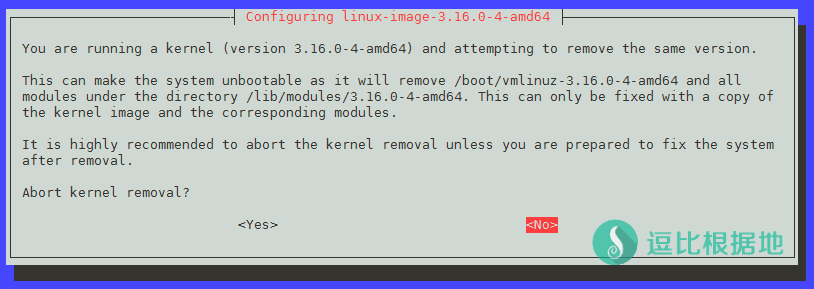
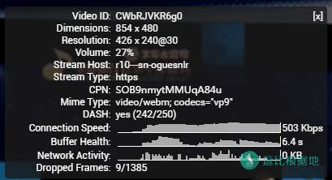
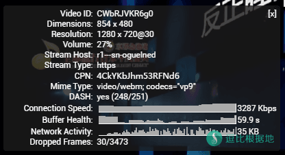
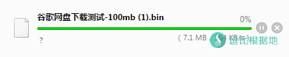
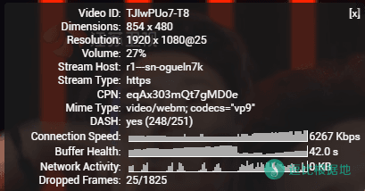
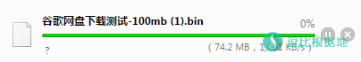

这几天BBR很火的样子，我就半夜测试一下。BBR和锐速都属于TCP拥塞控制技术，虽然这类技术互联网上面不少，不过我都不是很了解。
本文章仅为我个人的测试，各地区测试情况不一样，而且BBR还处于开发初期并且开源，而锐速则已经停止开发了。
一键脚本安装：『原创』Debian/Ubuntu系统 TCP拥塞控制技术 ——TCP-BBR 一键安装脚本
注意：TCP-BBR和锐速一样，不支持Openvz，查看本教程之前，请先确定你的VPS的虚拟化技术！
注意：本教程涉及到VPS更换内核，所以如果步骤错误，或者VPS不兼容最新的内核，会导致无法开机等错误，请勿用于生产环境！！！！
BBR 简单介绍
BBR 是一个由谷歌社区开发的 TCP拥塞控制技术，目前处于开发初期，但是前景很棒，大家可以持续关注，同时BBR是集成与Linux最新版本的内核中的。
具体什么是TCP拥塞控制技术，详细的我也不懂，我就用通俗的解释一下，不一定准确，看一看理解一下就好了。
原始的TCP流量传输，已经不能适应现在的互联网了，我们把 TCP流量比喻成 公路上的汽车流量，而TCP传输隧道就是 公路，那么：
在原始的TCP流量传输中，一条十字路口公路，很多车流量，但是却没有红绿灯和交警，导致大家左挤右挤的堵车了，这就是没有合理的管理导致的。
而BBR和锐速等TCP流量控制技术，就是红绿灯+交警，他们就是在无人管理的十字路口，去合理指挥分配车流量，然后最大化的利用车流量，保证路面畅通。
大概就是这样解释了，有什么错误请指出。
BBR官方项目地址：https://github.com/google/bbr
启动步骤
首先是教程，本人喜欢Debian，所以我先使用 Debian 7 / 8 x64 系统来做测试。Ubuntu随后考虑加上。
每一个步骤，我都会加上VPS中执行后的提示，本教程以64位为例。但是各个系统可能会存在差异，所以仅为参考。
在 2016-12-05 21:00 更新的 4.9.0-rc8 内核已经支持了TCP-BBR，最新内核看这里。
注意：TCP-BBR必须是 2016-12-05 21:00 更新的 4.9.0-rc8 内核及以后的版本 才能开启，而锐速并不支持这个最新的内核版本，所以TCP-BBR和锐速是不能共存的。
更换内核需要ROOT权限的账号，所以如果你是普通用户 的话，需要切换到ROOT账号，如果你是ROOT账号，那就忽略这个步骤：
sudo su
输入并回车后，会提示让你输入当前用户账号的密码，输入并回车后就可以继续下面的步骤了。
uname -m
使用这个命令会返回你的系统位数，如果是 x86_64 那就是64位，如果是 i386 或 386 或 i686 或 686 那就是32位。
下载内核文件（64位系统）
wget -O linux-image-4.16.0-amd64.deb "http://kernel.ubuntu.com/~kernel-ppa/mainline/v4.16/linux-image-4.16.0-041600-generic_4.16.0-041600.201804012230_amd64.deb"
下载内核文件（32位系统）
wget -O linux-image-4.16.0-i386.deb "http://kernel.ubuntu.com/~kernel-ppa/mainline/v4.16/linux-image-4.16.0-041600-generic_4.16.0-041600.201804012230_i386.deb"
点击展开 查看VPS提示
# VPS提示（64位）
[email protected]:~# wget -O linux-image-4.16.0-amd64.deb "http://kernel.ubuntu.com/~kernel-ppa/mainline/v4.16/linux-image-4.16.0-041600-generic_4.16.0-041600.201804012230_amd64.deb"
--2018-04-05 15:05:32-- http://kernel.ubuntu.com/~kernel-ppa/mainline/v4.16/linux-image-4.16.0-041600-generic_4.16.0-041600.201804012230_amd64.deb
Resolving kernel.ubuntu.com (kernel.ubuntu.com)... 91.189.94.216
Connecting to kernel.ubuntu.com (kernel.ubuntu.com)|91.189.94.216|:80... connected.
HTTP request sent, awaiting response... 200 OK
Length: 53088470 (51M) [application/x-debian-package]
Saving to: `linux-image-4.16-amd64.deb'
100%[======================================================================================================================================>] 5,30,88,470 1.87M/s in 41s
2018-04-05 15:06:14 (1.23 MB/s) - `linux-image-4.16-amd64.deb' saved [53088470/53088470]
安装内核（64位）
dpkg -i linux-image-4.16.0-amd64.deb
安装内核（32位）
dpkg -i linux-image-4.16.0-i386.deb
点击展开 查看VPS提示
# VPS提示
# 示例还是显示文章以前的旧版本号，不用在意。
[email protected]:~# dpkg -i linux-image-4.16.0-amd64.deb
Selecting previously unselected package linux-image-4.10.1-040900rc8-generic.
(Reading database ... 25141 files and directories currently installed.)
Preparing to unpack linux-image-4.10.1-040900rc8-generic_4.10.1-040900rc8.201612051443_amd64.deb ...
Done.
Unpacking linux-image-4.10.1-040900rc8-generic (4.10.1-040900rc8.201612051443) ...
Setting up linux-image-4.10.1-040900rc8-generic (4.10.1-040900rc8.201612051443) ...
Running depmod.
update-initramfs: deferring update (hook will be called later)
Examining /etc/kernel/postinst.d.
run-parts: executing /etc/kernel/postinst.d/apt-auto-removal 4.10.1-040900rc8-generic /boot/vmlinuz-4.10.1-040900rc8-generic
run-parts: executing /etc/kernel/postinst.d/initramfs-tools 4.10.1-040900rc8-generic /boot/vmlinuz-4.10.1-040900rc8-generic
update-initramfs: Generating /boot/initrd.img-4.10.1-040900rc8-generic
run-parts: executing /etc/kernel/postinst.d/zz-update-grub 4.10.1-040900rc8-generic /boot/vmlinuz-4.10.1-040900rc8-generic
Generating grub configuration file ...
Found linux image: /boot/vmlinuz-4.10.1-040900rc8-generic
Found initrd image: /boot/initrd.img-4.10.1-040900rc8-generic
Found linux image: /boot/vmlinuz-3.16.0-4-amd64
Found initrd image: /boot/initrd.img-3.16.0-4-amd64
done
列出并删除旧内核
列出VPS 除了刚才安装的内核以外的 所有内核名称：
注意：这个代码是排除了刚才安装的内核，所以不会显示刚才安装的那个内核。删除了多余的内核后，就会什么都不显示！
dpkg -l|grep linux-image | awk '{print $2}' | grep -v 'linux-image-[4-9].[0-9]*.'
[email protected]:~# dpkg -l|grep linux-image | awk '{print $2}' | grep -v 'linux-image-[4-9].[0-9]*.'
linux-image-3.16.0-4-amd64
linux-image-amd64
我使用的VPS是 3.16.0-4-amd64 内核的，所以删除这两个内核： linux-image-3.16.0-4-amd64、linux-image-amd64 。
删除旧内核：
apt-get purge 旧内核名称
# ！！！！示例！！！！
# 比如我是有这两个内核，所以我把这两个删掉，不要照着我的这个步骤做，自己换成你VPS的内核名称！！！
apt-get purge linux-image-3.16.0-4-amd64
apt-get purge linux-image-amd64
# ！！！！示例！！！！
删除旧内核的过程中会提示你是否继续，选择 Y ，然后还会提示你是否终止删除内核的行为，选择 NO 。

点击展开 查看VPS提示
# VPS提示
# 示例还是显示文章以前的旧版本号，不用在意。
[email protected]:~# apt-get purge linux-image-3.16.0-4-amd64
Reading package lists... Done
Building dependency tree
Reading state information... Done
The following packages were automatically installed and are no longer required:
libuuid-perl linux-base
Use 'apt-get autoremove' to remove them.
The following packages will be REMOVED:
linux-image-3.16.0-4-amd64* linux-image-amd64*
0 upgraded, 0 newly installed, 2 to remove and 7 not upgraded.
After this operation, 164 MB disk space will be freed.
Do you want to continue? [Y/n] y
(Reading database ... 31152 files and directories currently installed.)
Removing linux-image-3.16.0-4-amd64 (3.16.36-1+deb8u2) ...
Ok, proceeding with removing running kernel image.
/etc/kernel/postrm.d/initramfs-tools:
update-initramfs: Deleting /boot/initrd.img-3.16.0-4-amd64
/etc/kernel/postrm.d/zz-update-grub:
Generating grub configuration file ...
Found linux image: /boot/vmlinuz-4.10.1-040900rc8-generic
Found initrd image: /boot/initrd.img-4.10.1-040900rc8-generic
done
The link /vmlinuz.old is a damaged link
Removing symbolic link vmlinuz.old
You may need to re-run your boot loader
The link /initrd.img.old is a damaged link
Removing symbolic link initrd.img.old
You may need to re-run your boot loader
Purging configuration files for linux-image-3.16.0-4-amd64 (3.16.36-1+deb8u2) ...
# ================================================
[email protected]:~# apt-get purge linux-image-amd64
Reading package lists... Done
Building dependency tree
Reading state information... Done
The following packages were automatically installed and are no longer required:
libuuid-perl linux-base
Use 'apt-get autoremove' to remove them.
The following packages will be REMOVED:
linux-image-amd64*
0 upgraded, 0 newly installed, 1 to remove and 7 not upgraded.
After this operation, 164 MB disk space will be freed.
Do you want to continue? [Y/n] y
(Reading database ... 31152 files and directories currently installed.)
Removing linux-image-amd64 (3.16.36-1+deb8u2) ...
Ok, proceeding with removing running kernel image.
/etc/kernel/postrm.d/initramfs-tools:
update-initramfs: Deleting /boot/initrd.img-amd64
/etc/kernel/postrm.d/zz-update-grub:
Generating grub configuration file ...
Found linux image: /boot/vmlinuz-4.10.1-040900rc8-generic
Found initrd image: /boot/initrd.img-4.10.1-040900rc8-generic
done
The link /vmlinuz.old is a damaged link
Removing symbolic link vmlinuz.old
You may need to re-run your boot loader
The link /initrd.img.old is a damaged link
Removing symbolic link initrd.img.old
You may need to re-run your boot loader
Purging configuration files for linux-image-amd64 (3.16.36-1+deb8u2) ...
# ================================================
# 最后在看一下内核是否只剩下教程安装的内核。
[email protected]:~# dpkg -l|grep linux-image | awk '{print $2}'
linux-image-4.10.1-040900-generic
开启bbr
sed -i '/net\.core\.default_qdisc=fq/d' /etc/sysctl.conf
sed -i '/net\.ipv4\.tcp_congestion_control=bbr/d' /etc/sysctl.conf
# 上面两条命令是删除开启BBR代码的。如果你是升级内核(BBR),为了避免重复添加代码，所以先删除后添加。
echo "net.core.default_qdisc=fq" >> /etc/sysctl.conf
echo "net.ipv4.tcp_congestion_control=bbr" >> /etc/sysctl.conf
# 执行这个保存生效更改。
sysctl -p
# VPS提示
[email protected]:~# sysctl -p
net.core.default_qdisc = fq
net.ipv4.tcp_congestion_control = bbr
更新 grub 系统引导文件并重启VPS
# 更新系统引导文件
update-grub
# 重启VPS，执行后SSH链接会断开，等十几秒再重新连接继续执行下面的启动命令。
reboot
# VPS提示
[email protected]:~# update-grub
Generating grub configuration file ...
Found linux image: /boot/vmlinuz-4.10.1-040900rc8-generic
Found initrd image: /boot/initrd.img-4.10.1-040900rc8-generic
done
其他说明
查看bbr是否开启
执行下面命令，如果结果中有bbr，即证明你的内核已开启bbr。
sysctl net.ipv4.tcp_congestion_control
执行下面命令，看到有 tcp_bbr 模块，即说明bbr已启动
lsmod | grep bbr
# VPS提示
[email protected]:~# sysctl net.ipv4.tcp_congestion_control
net.ipv4.tcp_congestion_control = bbr
# ================================================
[email protected]:~# lsmod | grep bbr
tcp_bbr 20480 0
关闭bbr
sed -i '/net\.core\.default_qdisc=fq/d' /etc/sysctl.conf
sed -i '/net\.ipv4\.tcp_congestion_control=bbr/d' /etc/sysctl.conf
sysctl -p
执行完上面的代码，就使用reboot重启VPS后才能关闭bbr，重启后再用下面的查看bbr状态代码，查看是否关闭了。
reboot
升级BBR
因为BBR只是内核中的一段功能代码，所以内核更新不一定是BBR更新，就像Win10中IE的位置一样，Win10更新不代表是为了更新IE，所以是否要更新内核要看BBR官方源码有没有更新了。
BBR官方项目地址：https://github.com/google/bbr
注意BBR源码最后更新时间，如果比你的内核新，那么你可以更新内核，反之无需更新。
而升级BBR也就是重新安装最新内核，和上面更换内核的方法一样，只是版本号换成最新的。
卸载BBR
BBR集成于内核中，所以卸载BBR=更换内核，教程：
Debian/Ubuntu 内核降级教程 —— 降低(BBR)为支持锐速的内核版本
裸SS 与 锐速+SS 与 BBR+SS 速度对比
本人的测试环境是：晚上23:00点，联通运营商，美国渣渣VPS。
各个地区和运营商都存在差别，我的测试 速度对比仅供参考。谷歌网盘单线程下载测速地址：100MB
因为是半夜测试的，再加上用的美国垃圾小鸡，所以 裸SS 速度感人。
使用 锐速+SS 后，单线程下载测速，翻了十倍，Youtube 也能看 1080P流畅 了。
换成 BBR+SS 后，单线程又在 锐速+SS 的基础上翻了一倍，Youtube 速度有上升了一个档次 1440P 倒是勉强，1080P可以随便拖拉了。
虽然 Youtube 的数值不是很准，但是还是有点用的，数值太低同样也代表速度不行。
总其以上，锐速(ServerSpeed)的技术已经成熟、定型，加速效果还是不错的，但是不再更新和维护了。
而 TCP-BBR 属于新生的技术，处于开发初期，买没有完善成熟，未来的潜力相信还好更好。
所以总的来说：非折腾党，还是建议先使用锐速观望 TCP-BBR 一段时间，这是最稳妥的办法。
裸 SS

锐速+SS


BBR+SS


本文章安装步骤来自：https://github.com/iMeiji/shadowsocks_install/wiki/开启TCP-BBR拥塞控制算法
转载请超链接注明：逗比根据地 » 比锐速还强的 TCP拥塞控制技术 —— TCP-BBR 测试及开启教程
责任声明：本站一切资源仅用作交流学习，请勿用作商业或违法行为！如造成任何后果，本站概不负责！


因为原版BBR更注重平衡和通用性，而第三方魔改的BBR，更注重速度暴力，经过使用者反馈，也有一些人在使用魔改BBR的过程中发现，流量多消耗了很多，但是速度却还没有原版BBR快，魔改BBR只适用于部分情况服务器，而原版BBR更加通用，毕竟目前的第三方魔改BBR只是看了看源码改了改一些参数罢了，和原版的大量环境因素测试比不了。
这是必须的步骤，删除旧内核，新内核也可能会不兼容导致重启开机失败，这都是有可能发生的，所以不建议在生产环境下进行。
不过BBR相对来说不适合大量短链接，会导致BBR炸掉，ss下载一个大文件，你可以理解为TCP长链接，而网站的话访客访问网站，出现的都是短链接，并不适合BBR，当然这只是理论，你也可以试试。
openvz建站没问题，但是你要找个稳定超售较少的，简单的说就是 口碑好并且openvz不是特别便宜的那种，毕竟一分钱一分货，价格越低意味着超售越高。
我比较推荐Ramnode我现在用的是Ramnode的KVM洛杉矶，去年以前是Openvz的个人感觉速度一般，但是很稳定，建站已经快两年了没有出现宕机等服务器故障。